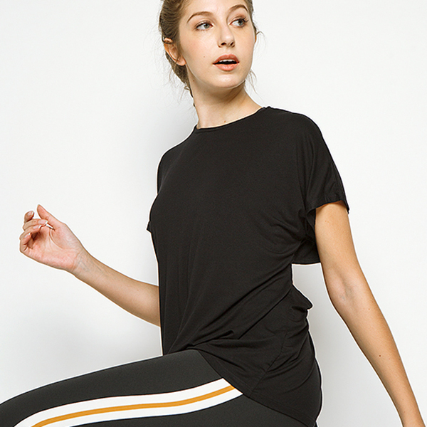

Mudahnya Tetap Bugar dan Berkonsentrasi Ketika Puasa
By COTTONINK on Apr 28, 2020 3:00 AM in Lifestyle ᅳ Umumnya saat seperti ini adalah waktunya kita meliburkan pakaian olahraga. Hal terbaik yang akan terjadi pada legging adalah dikenakan ketika bersantai di sofa sambil menghitung waktu menjelang maghrib. Hal yang terburuk? Menjadikannya kain pel tahan air. Ramadan adalah alasan dari itu semua di mana artinya kita harus berpuasa. (...)
Wanderlust: Menjelajahi Timur Jauh, Cina
By COTTONINK on Mar 30, 2020 3:00 AM in Wanderlust ᅳ Mari ikuti perjalanan Venus Aretha (@venusaretha) menjelajahi timur jauh, Cina. Dalam perjalanannya, dia mengunjungi kota-kota di sana dan membagikan pengalaman ketika berada di sana. Untuk mengetahui ceritanya, terus baca sampai habis ya! (...)